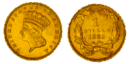

"Put your gold money where your love is baby"

The Annotated "Loser"
An installment in The
Annotated Grateful Dead Lyrics.
By David Dodd
Research Associate, Music Dept., University of California, Santa Cruz
Copyright notice; © 1995,1998 David Dodd
"Loser"
Words by Robert Hunter; music by Jerry Garcia
Copyright Ice Nine Publishing; used by permission
If I had a gun for every ace I've drawn
I could arm a town the size of Abilene
Don't you push me baby cause I'm moaning low
You know I'm only in it for the gold
All that I am asking for is ten gold dollars
I could pay you back with one good hand
You can look around about the wide world over
You'll never find another honest man
Last fair deal in the country, sweet Suzy
Last fair deal in the town
Put your gold money where your love is, baby
Before you let my deal go down
Don't you push me baby
because I'm moaning low
I know a little something
you won't ever know
Don't you touch hard liquor just
a cup of cold coffee
Gonna get up
in the morning and go
Everybody's bragging and drinking that wine
I can tell the Queen of Diamonds by the way she shine
Come to Daddy on an inside straight
I got no chance of losing this time
No, I got no chance of losing this time
Musical details:
- Key: Am
- Time signature: 4/4 (12/8 feeling)
- Chords used: Am, G, C, D, Em, Am7, A, Am6
- Songbook availability:
Recorded on
First performance: February 18, 1971 at the Capitol Theater in Port Chester, N.Y.
"Loser" appeared in the first set between "Hurts Me Too" and the first
"Greatest Story Ever Told." Other firsts in the
show included "Bertha", "Johnny B. Goode,"
"Playing in the Band," and "Wharf
Rat." It remained in the repertoire therafter.
Covered by Cracker on
Kerosene Hat.
According to The Cambridge Gazetteer
of the United States and Canada, Abilene, Kansas (present
population 6242) was settled in 1858. "...it became the first railhead of the
Union Pacific Railroad at the N terminus of the Chisholm Trail from
Texas (1867-71) at leading distribution point on the Smoky Hill Trail to
the West. One of the most famous of the wide-open cow towns, it was "cleaned up"
by Wild Bill Hickok, who became its marshal in 1871." Abilene, Texas,
founded in 1881, was named for the Kansas town, because it was also a
railhead for cattle drives. When Hunter speaks of a "town the size of
Abilene," we can assume he meant the Kansas town at the height of its
"wide-open" period, ca. 1870. According to the Encyclopedia Britannica,
the town was first known as "Mud Creek," and was named Abilene in around 1860,
for the biblical Abilene, which means "grassy plain." The Britannica also
gives a clue to the town's population at its height, by noting that
"the biggest year of cattle drives to Abilene over the Chisholm Trail
was 1871, when more than 5,000 cowboys driving 700,000 cows arrived at
the yards."

(Image courtesy Coin Universe)
The gold dollar coin referred to in the song may have been of several possible
designs:
- [1849-1854] Liberty Head
- [1854-1856] Small Indian Head
- [1856-1889] Large Indian Head (shown)
Keywords: @gambling, @cards, @West
First posted: November 9, 1995
Last revised: March 24, 1998